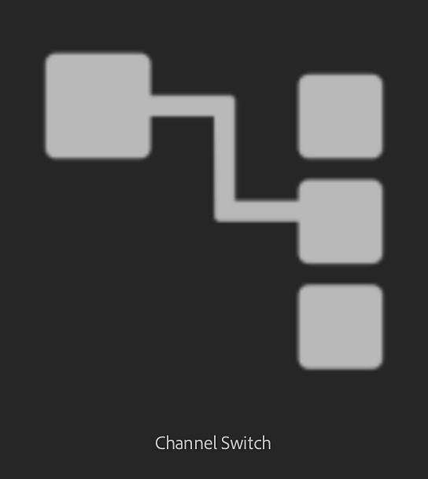

Switch the channels of the output maps of the material.
Basic parameters
Draw Custom Weave: Draw the weaves on your 2D viewport.
Input Channel: Select which channel the filter will move.
Output Channel: Select Which channel is the destination of the Input Channel.
Opacity: 0-1
Adjust the opacity of the channel information relative to the existing channel information. In other words, this controls the opacity of the mask used to apply the new channel fill.
Blending Mode: Select the blending mode for the basecolor channel. Changing the blending mode can substantially change the appearance of the channel.
Advanced
Material Input: Select which material to use as input.
Mask
Use Custom Mask: toggle
Enable or disable the use of a custom mask. If enabled the following parameters appear:
Custom Mask – Blur: 0-1
Blur the mask.
Custom Mask – Invert: toggle
Invert the mask.